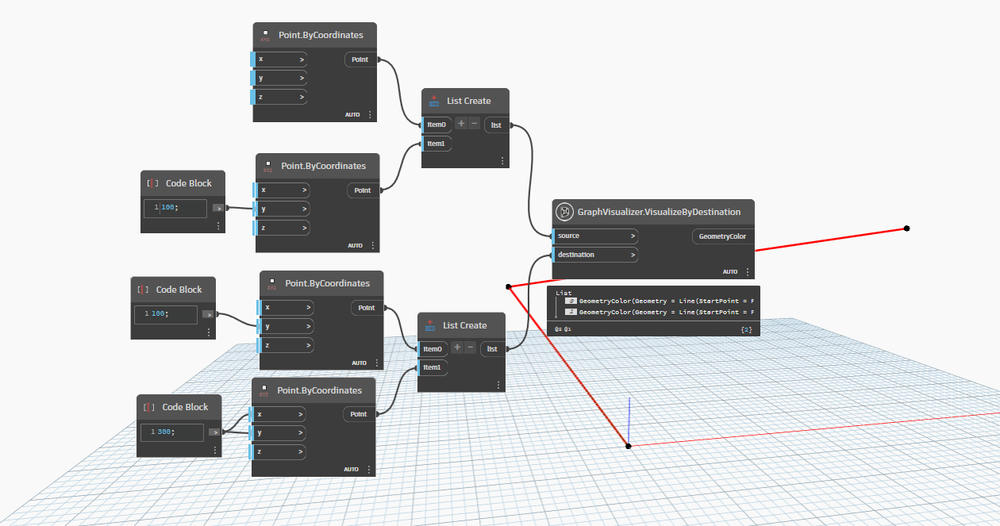
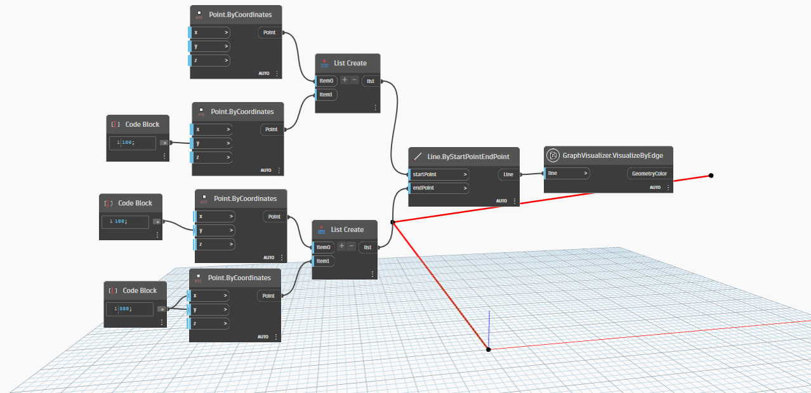
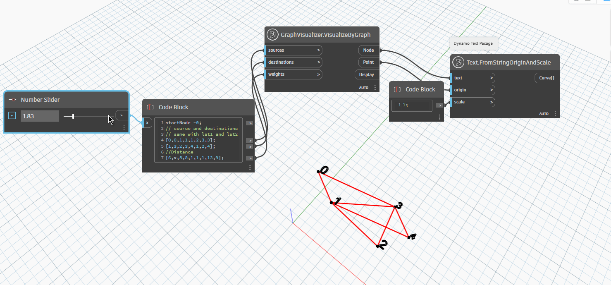

Class GraphVisualizer
- Namespace
- OpenMEPSandbox.Graph
- Assembly
- OpenMEPSandbox.dll
public class GraphVisualizer- Inheritance
-
GraphVisualizer
- Inherited Members
Methods
VisualizeByDestination(Point, Point)
Visualize the graph with source and destination points
public static GeometryColor VisualizeByDestination(Point source, Point destination)Parameters
sourcePointthe first node of edge
destinationPointthe second node of edge
Returns
- GeometryColor
the geometry color of geometry
Examples

GraphVisualizer.VisualizeByDestination.dynVisualizeByEdge(Line)
Visualize the graph with edge
public static GeometryColor VisualizeByEdge(Line line)Parameters
lineLineedge created by two node
Returns
- GeometryColor
Examples

GraphVisualizer.VisualizeByEdge.dynVisualizeByGraph(List<int>, List<int>, List<double>)
Visualizes a graph with the given vertex connections and edge weights using 3D points. Determines the maximum weight and creates a 3D point for each vertex, then calculates the coordinates of each point based on their position along a circle with radius proportional to their weight. Returns a list of the generated points.
[MultiReturn(new string[] { "Node", "Point", "Display" })]
public static Dictionary<string, object> VisualizeByGraph(List<int> sources, List<int> destinations, List<double> weights)Parameters
sourcesList<int>A list of integers representing the starting vertices for each edge.
destinationsList<int>A list of integers representing the ending vertices for each edge.
weightsList<double>A list of doubles representing the weight of each edge.
Returns
- Dictionary<string, object>
A list of Point3D objects representing the vertices of the graph.
Examples

GraphVisualizer.VisualizeByGraph.dyn